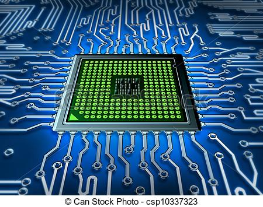

Quarta Geração
Microprocessador
A quarta geração de computadores caracteriza-se pelo uso do microprocessador. O microprocessador é a CPU (Central Processing Unit) dos computadores, ou seja Unidade Central de Processamento.

Os sistemas operacionais como MS-DOS, UNIX, Apple's Macintosh foram construídos. Linguagens de programação orientadas a objeto como C++ e Smalltalk foram desenvolvidas. Discos rígidos eram utilizados como memória secundária. Impressoras matriciais, e os teclados com os layouts atuais foram criados nesta época. Os computadores eram mais confiáveis, mais rápidos, menores e com maior capacidade de armazenamento. Esta geração é marcada pela venda de computadores pessoais.